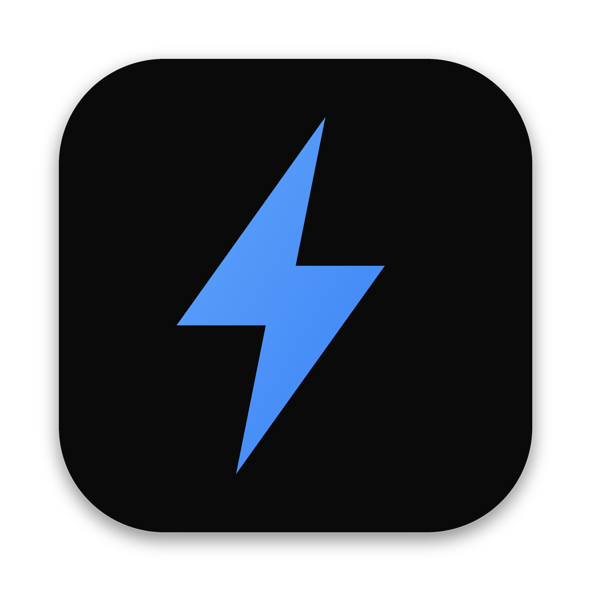

Codeman
Run Codeman on this Mac, or connect to another machine
Show the installer’s output
Codeman needs a newer WebKit than this Mac has: macOS 13.3 or later, or Safari 16.4 or later on macOS 11 and 12.
Looking for Codeman on this Mac…
Starting another server here would take over its sessions.
Also running on this Mac
Codeman is not installed there yet?
Terminal opens, connects with ssh and runs Codeman’s installer there. Or run this in a terminal on that machine:
curl -fsSL https://getcodeman.com/install | bash